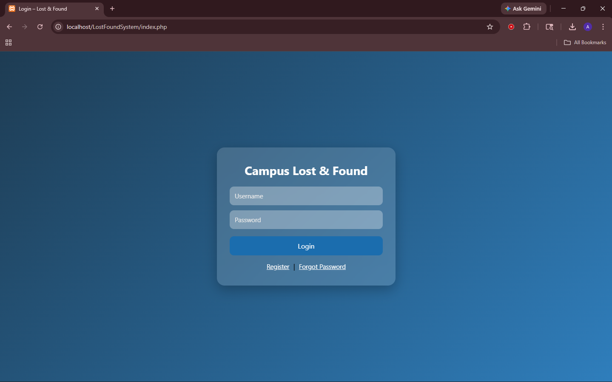
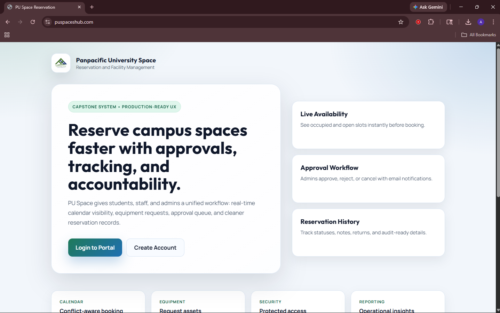
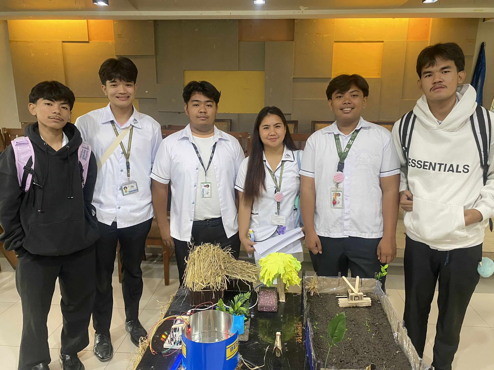
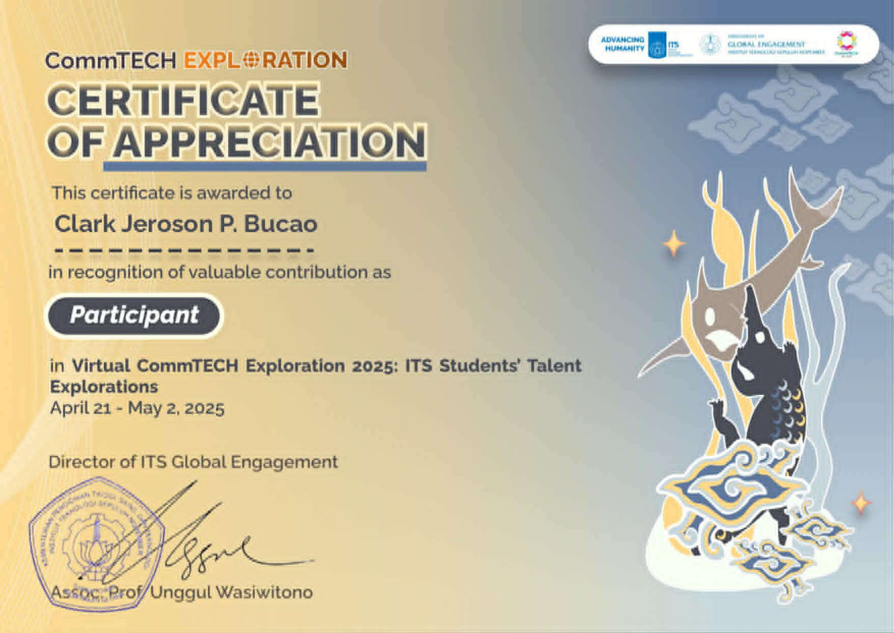
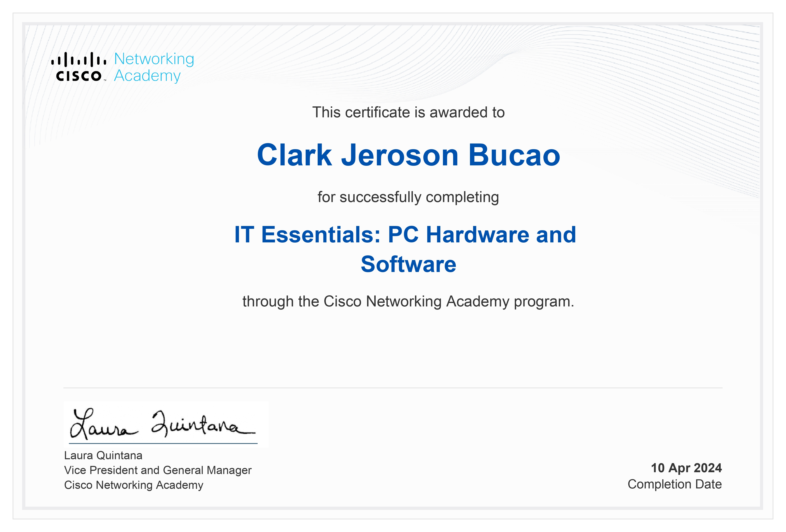
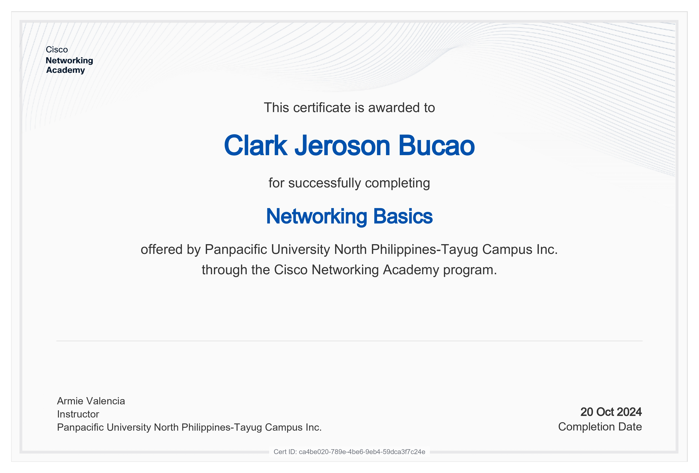
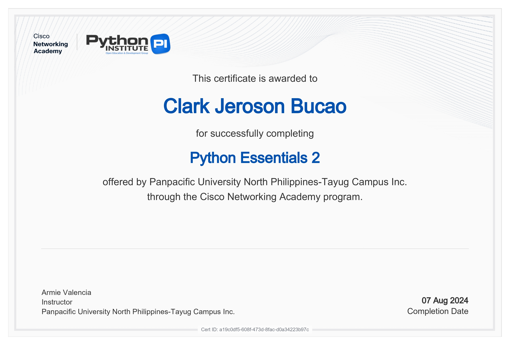
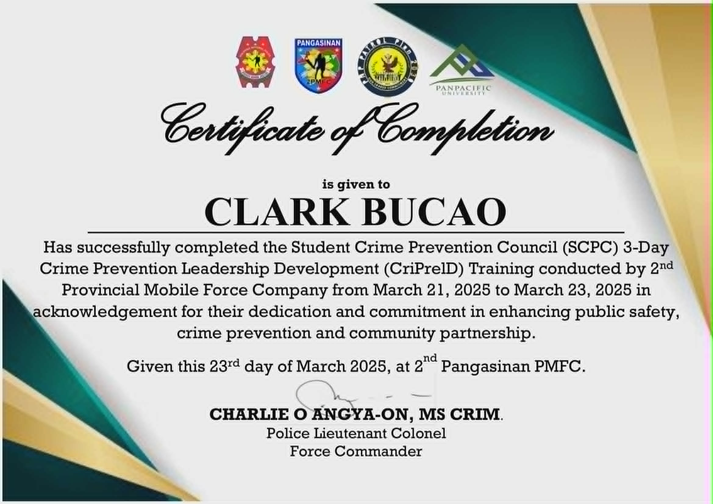
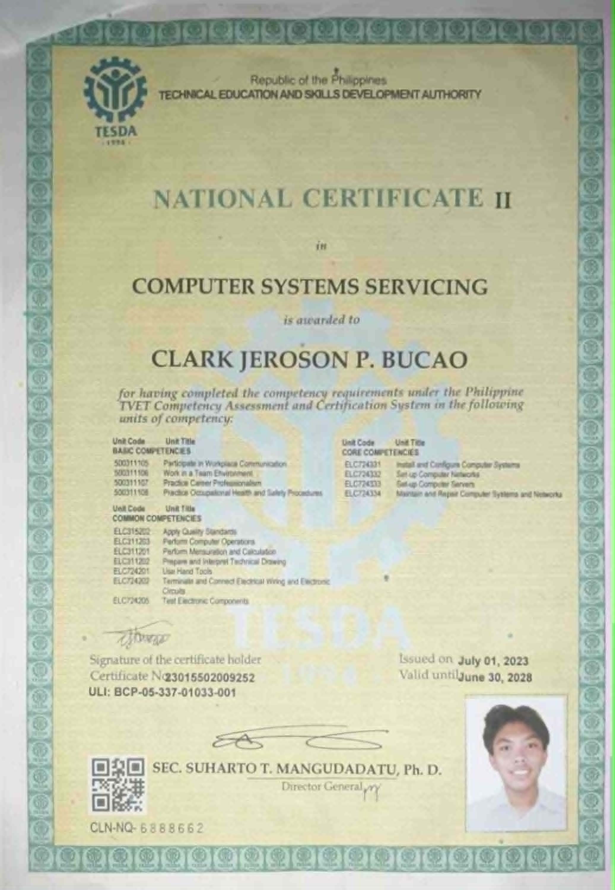

Bachelor of Science in Information Technology Aspiring Full Stack Web Developer Database • Web Development • IoT
View Projects > Download ResumeI am Clark Jeroson Bucao, a Bachelor of Science in Information Technology student at Panpacific University. I enjoy building practical systems using PHP, MySQL, JavaScript, GitHub, and Arduino. My interests include web development, database systems, networking, and IoT-based technologies.
A campus web-based platform that allows students and staff to report and track lost items.

A room reservation platform for students and staff with booking management.

An IoT-based project focused on real-time water monitoring and alert systems.


CommTech Certificate

Cisco IT Essentials

Networking Certificate

Python Programming Certificate

Additional Training Certificate

NC II Certificate
Email: bucaoclark@gmail.com
GitHub: github.com/Clark-Anjing-Goblok
Location: Natividad, Pangasinan